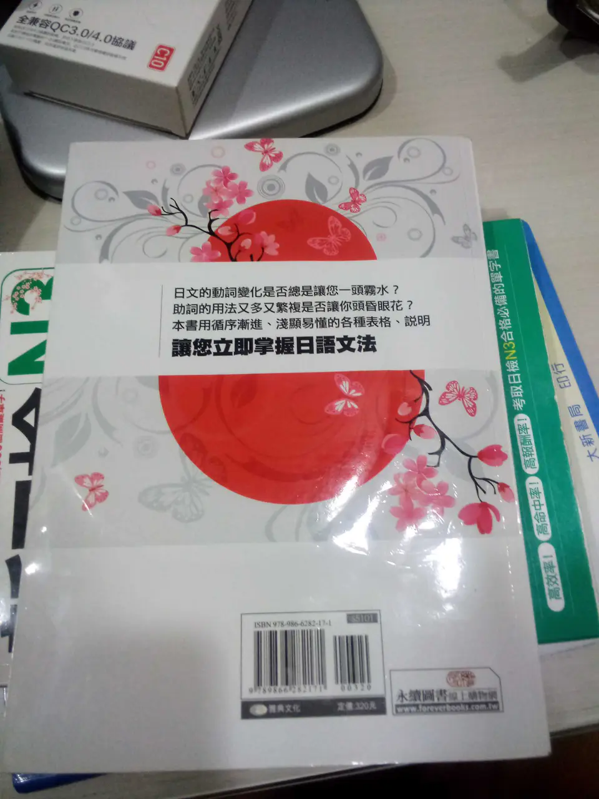
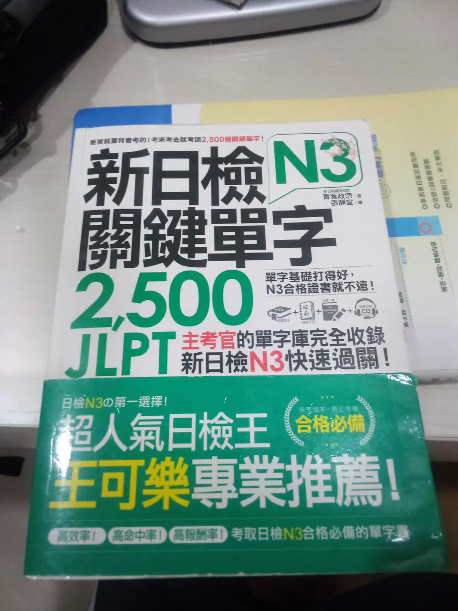
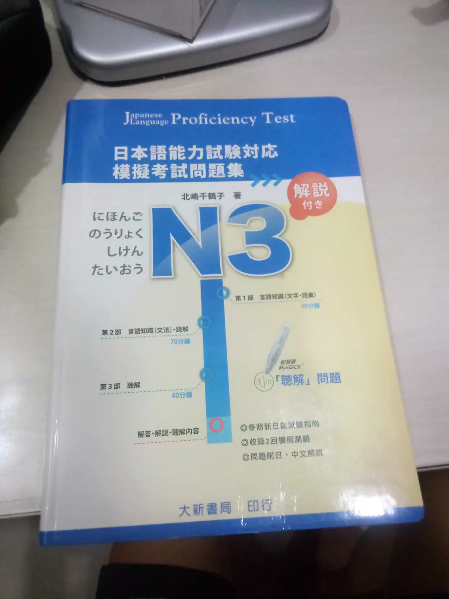
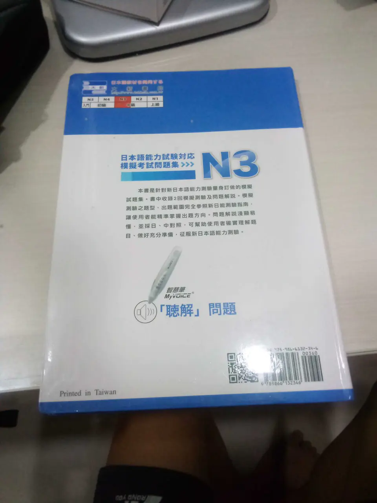
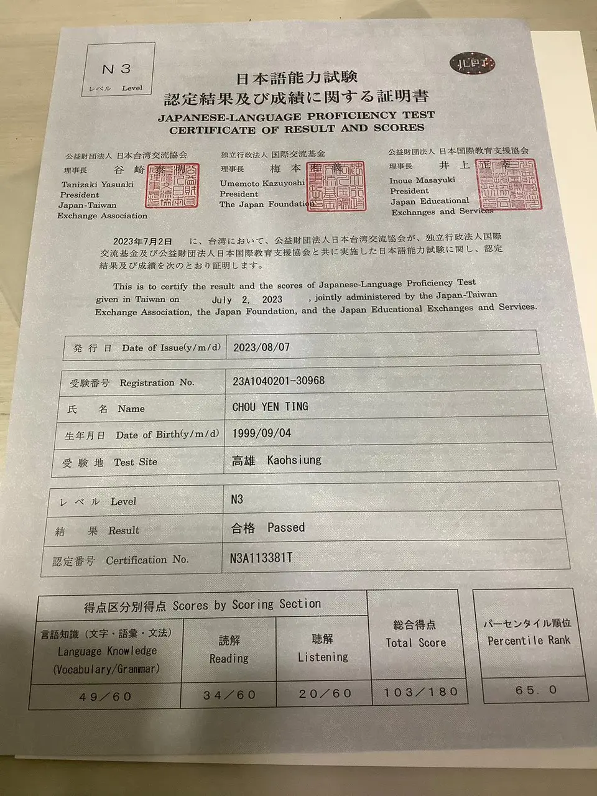

點擊上方的語言選單以切換語言
大家好，我是一位語言學習愛好者，今天想和大家分享我 靠自學考過 JLPT N3（日語能力試驗）的心得與過程。
高中時我以英文作為主力衝刺科目，兩年來英文成績都維持在全校前 5%。在完全沒有補習的情況下，我在學測英文考取了 13 級分（滿分為 15 級分）。
不過我認為只會英文還不夠——為了在全球化時代中更具競爭力，我選擇了與中文有漢字共通性的 日語作為第二外語。
雖然高中提供日文課程作為第二外語，但課程內容偏淺，僅教到ます形及基本寒暄語，無法滿足我深入學習的渴望。
我在書店找到了一本很實用的工具書：

接著我透過看日劇學日文，特別建議使用中日雙語字幕，因為：
我個人是特攝劇的愛好者，以下是推薦資源：
奧特曼系列不只是兒童節目，劇中常常融入對人類社會的諷刺與省思，內容不乏深度與哲理。
如果你只是想看打怪的場景，那麼快轉到每集的倒數三分鐘通常就能看到戰鬥高潮；但這麼做會錯過整部作品的真正意義。
這些作品不僅有激烈的打鬥，還能讓你在觀看的過程中思考生命、社會、環境等議題。所以，若你願意深入，會發現每個怪獸與奧特曼的戰鬥背後，其實都是對「人類」與「自然」的深刻反思。
需要注意的是，部分奧特曼作品是以單元劇形式播出，因此我沒有將這些單元劇嵌入網頁中。這些影片是以播放列表形式提供的，方便大家逐集觀看。如果將這些單元劇全部嵌入，會影響網頁的加載速度，甚至可能導致網頁崩潰。並且，本網頁的核心目標是教大家如何準備日文N3，而不是介紹奧特曼的故事。
這是我準備單字的主力書籍，內容設計紮實：

接下來我使用這本模擬考題書進行實戰演練：


看完單字書後我開始練N3題目，發現文法和閱讀部分還有不少新用法，於是上網查資料並整理筆記補強。
平常沒有持續聽NHK等日文媒體，聽力是在考前一週開始密集練習的。
感謝YouTube上許多教學影片，我使用它們來聽過去模擬試題。雖然最終聽力分數只有 20 分，但剛好過線也算是鬆一口氣。
以下是我練聽力的影片：
| 項目 | 得分（滿分60） | 合格標準 |
|---|---|---|
| 言語知識（單字+文法） | 49 | ≥ 19 |
| 閱讀 | 34 | ≥ 19 |
| 聽力 | 20 | ≥ 19 |
| 總分：103 / 180 | ✅ 合格！（總分需 ≥ 95） | |

我是在吃午餐時查到成績的，看到合格的那一刻真的超級開心！
自學的這條路雖然累，但能把熱情轉化為成果，真的很有成就感。希望這篇心得能幫助到正準備 JLPT 的你！
不補習也能考過N3，關鍵是熱情、方法與堅持！
如果你對日語學習、JLPT考試、語言方法，或是特攝劇也感興趣，歡迎留言！